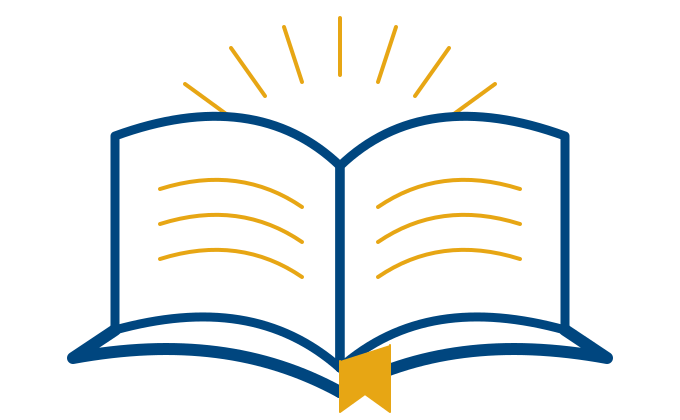

About This Guidebook
Created for students and educators, this guidebook offers practical strategies, real-world examples, and reflective prompts to help you use AI thoughtfully and effectively in learning, teaching, and beyond.
Developing AI Literacy for Learning and Work
The BE Framework helps students and educators build responsible, ethical, and effective habits when using AI.
Explore the BE Framework
Protect your data, your well-being, and the people around you.
Learn more ◇Use AI with integrity. Be transparent and give credit.
Learn more ⌕Question assumptions. Verify information. Think deeply.
Learn more ⚖Use AI for good. Understand impact. Act with care.
Learn more ●Consider your process. Learn from outcomes. Grow continuously.
Learn moreCreated for students and educators, this guidebook offers practical strategies, real-world examples, and reflective prompts to help you use AI thoughtfully and effectively in learning, teaching, and beyond.
Start with any BE habit that connects naturally to a course, assignment, or professional decision. The guides are coaching resources—not required rubrics.
Start with BE Safe